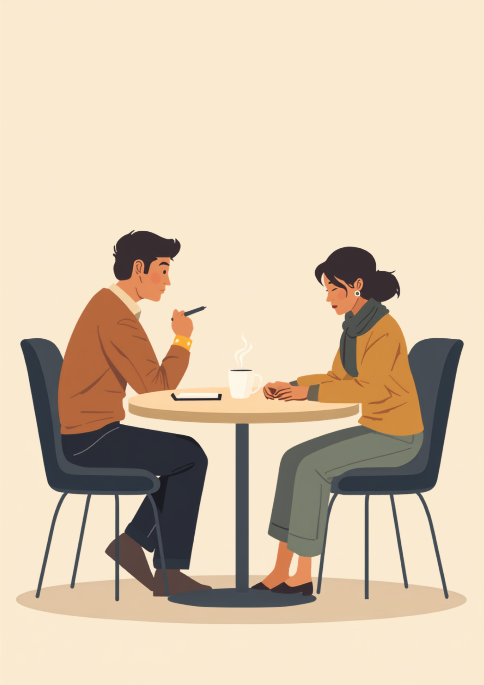
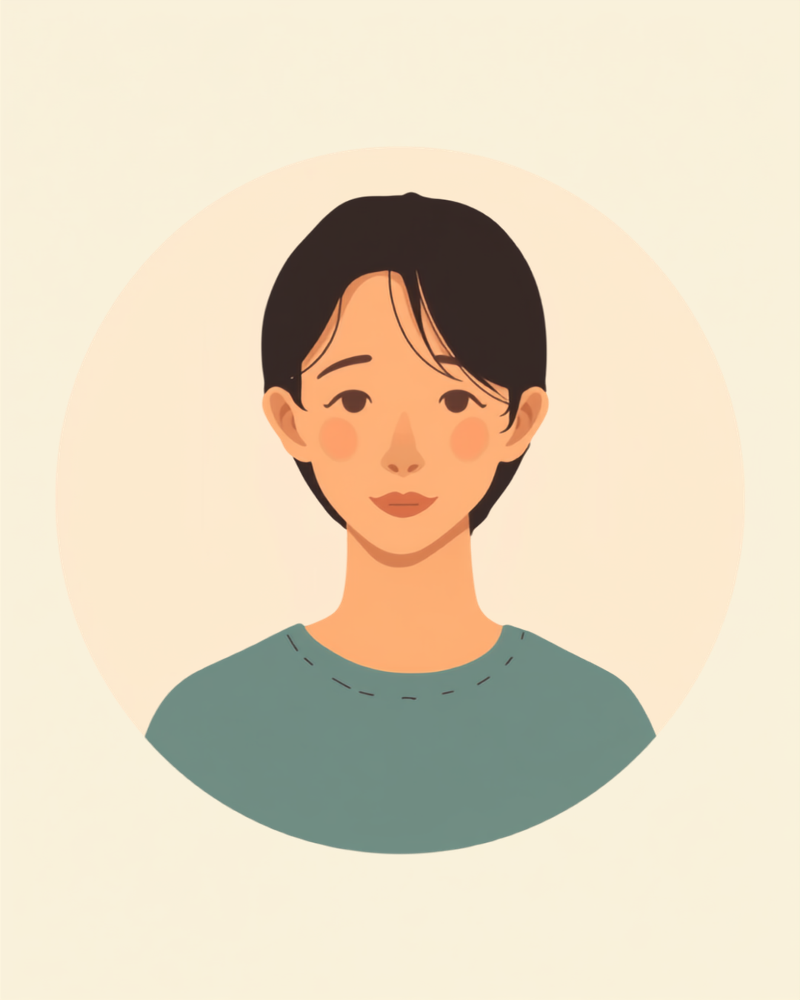

黙られると、こちらから喋ってしまっていた
「最近、仕事のことで気になっていることはありますか」。Bさんにそう聞いたとき、少しの間、返事がありませんでした。3秒か、4秒か。時間にすればそれだけのことです。けれど当時の私は、その静けさに耐えられず、「あ、例えば人間関係のこととか、作業のペースのこととか」と、自分で選択肢を並べ始めてしまいました。
Bさんは「あ、はい、そうですね……」と、私が挙げた選択肢の中から一つを選ぶような形で答えてくれました。面談としては、いちおう成立していたと思います。質問をして、答えが返ってきて、次の話題に移る。傍から見れば、スムーズに進んでいるように見えていたはずです。
けれど今振り返ると、あの3秒か4秒の間に、Bさんは自分の言葉を探していたのだと思います。私が先回りして選択肢を出したことで、Bさんは自分の言葉を見つける前に、私の言葉を借りて答えるしかなくなっていたのではないか。そう感じるようになったのは、もっとあとになってからのことでした。
「間を埋めること」が仕事だと思っていた
支援員になって1〜2年目の私は、面談中に間が空くことを、正直かなり気まずく感じていました。沈黙が続くと、自分の質問の仕方が悪かったのではないか、相手を困らせているのではないか、という焦りが先に立っていたのだと思います。だから、間が空きそうになると、反射的に言葉を継ぎ足していました。
「気まずさ」を埋めるための話し方になっていた
今にして思えば、あの頃の私が埋めていたのは、Bさんの不安ではなく、自分自身の気まずさでした。面談を「スムーズに進行すること」だと捉えていて、沈黙のない会話ができることが、支援員としての力量だと勘違いしていた部分があります。
実際、面談後のメモを見返すと、私の発言量はかなり多いものでした。感覚的な話ですが、当時の面談は支援員である私が7割ほど話し、Bさんが話すのは3割ほどという配分だったように思います。質問をして、少し待って、答えが出てこないとすぐに別の聞き方や具体例を出す。この繰り返しでした。
この配分に自分で気づいたのは、ある研修で「面談の録音を文字に起こして、自分の発言量を数えてみる」という課題をやったときでした。数字にしてみて初めて、自分がどれだけ喋っていたかを実感し、正直かなり恥ずかしい気持ちになったのを覚えています。
黙って待ったら、相手が自分の言葉で話し出した
転機になったのは、Bさんとの、ある面談でした。いつものように質問をしたあと、沈黙が始まりました。その日はたまたま、次の言葉が思い浮かばず、いつものように選択肢を出すことができませんでした。仕方なく、黙って待つしかなかったのです。
5秒、10秒。体感としては、かなり長い時間に感じました。何か言わなければ、という焦りが自分の中に湧き上がってくるのを感じながらも、その日はなんとかこらえて待ちました。
その沈黙のあと、Bさんはぽつりぽつりと話し始めました。「正直に言うと、さっきの質問、うまく言葉にできなくて。でも黙っていても急かされなかったので、ゆっくり考えてよかったんだって思えました。今までは、早く何か言わなきゃって焦って、適当な返事をしてたことが多かった気がします」。この言葉は、今も私の中に残り続けています。
正直に言うと、その言葉を聞くまで、私は自分が「急かしていた」という自覚がほとんどありませんでした。選択肢を出すことは、相手を助けているつもりでいたのです。けれど早く埋めようとする私の態度そのものが、Bさんに「早く答えなければ」という無言のプレッシャーを与えていたのだと、そのとき初めて理解しました。
沈黙を「何もない時間」ではなく「考えている時間」として捉え直したのは、この出来事があってからです。Bさんが黙っていた数秒間は、空白ではなく、Bさんの中で言葉が組み立てられている最中の時間だったのだと、今なら分かります。
今、面談で大事にしていること
Bさんのことがあってから、私は面談の中で「間が空いたら、自分の中で5つ数えてから口を開く」という、ごく単純なルールを持つようになりました。難しい技術ではありませんが、これを意識するだけで、自分から話題を埋めてしまう癖はかなり減りました。
質問のあとに、もうひと呼吸置く
具体的には、面談の中で次のようなことを意識しています。
- 質問をしたら、答えが返ってくるまで自分の中で5つ数える
- 沈黙を「気まずい時間」ではなく「考えている時間」として捉え直す
- 選択肢を出すのは、本当に相手が困っている様子が見えたときだけにする
- 面談のあと、自分の発言量が多くなかったかを振り返る
これらは、Bさんとのやり取りがなければ、今も気づかないままだったかもしれません。数字上は「スムーズに進んだ面談」に見えても、その裏で相手の言葉を奪ってしまっていることがある。このことを、今も自分への戒めとして持ち続けています。

この面談の姿勢は、Bさんの言葉がなければ持てていなかったものです。あの日、たまたま次の言葉が浮かばず黙って待つしかなかったことが、結果として一番大事な気づきをくれました。同時に、その経験があったからこそ、今関わっている方たちに対しては、間が空いたときに埋めるのではなく、少し多めに待ってみる、という姿勢を持てるようになったとも思っています。
よくある質問
関連記事
この記事に、聞いてみたいことはありますか？
「自分の場合はどうなんだろう」と思ったことを、気軽に書いてみてください。いただいた質問は個別にお返事したうえで、匿名で記事にすることがあります。
mimemime代表。就労支援の現場経験をもとに、障がいのある方の働く不安に寄り添う記事を執筆。